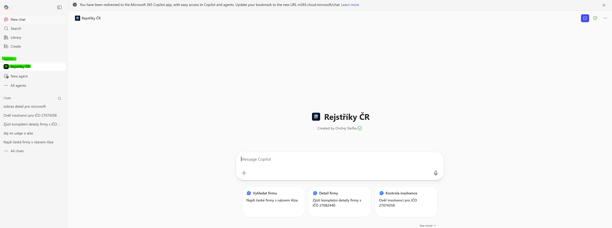

Co je Rejstříky ČR?
Rejstříky ČR je agent pro M365 Copilot, který vám umožní vyhledávat informace o českých firmách, smlouvách a insolvencích přímo v prostředí Microsoft 365. Místo procházení několika webových portálů se stačí zeptat přirozeným jazykem.
Agent čerpá data výhradně z oficiálních zdrojů:
- ARES (ares.gov.cz) — Administrativní registr ekonomických subjektů (Ministerstvo financí ČR)
- Registr smluv — veřejné smlouvy státních institucí (přes Hlídač státu)
- Insolvenční rejstřík — insolvenční řízení (přes ARES CEÚ a Hlídač státu)
Agent si nevymýšlí. Všechna data pocházejí z API výše uvedených zdrojů. Pokud informaci nenajde, řekne vám to — místo toho, aby si ji vymyslel.
Jak začít
- Otevřete M365 Copilot na webu m365.cloud.microsoft/chat
- V levém panelu najděte agenta Rejstříky ČR — kliknutím na něj přepnete konverzaci přímo na agenta
- Alternativně můžete do pole pro zprávy napsat @Rejstříky ČR a za zmínkou zadat svůj dotaz
- Agent zavolá příslušné API a vrátí vám strukturovanou odpověď

Důležité: Agent je dostupný výhradně v prostředí M365 Copilot (nikoliv v Teams). Najdete ho v levém panelu Copilotu nebo ho zavolejte přes @Rejstříky ČR. Pokud napíšete dotaz do obecného Copilotu bez zmínky agenta, nedostanete data z rejstříků.
Co agent umí
Vyhledávání firem
Hledejte firmy podle názvu, IČO, města nebo ulice. Agent prohledá databázi ARES a vrátí seznam odpovídajících firem.
Detail firmy
U každé firmy zjistíte kompletní profil: sídlo, právní forma, datum vzniku, DIČ, CZ-NACE klasifikace, registrace a další údaje.
Prověření firmy
Jedním dotazem získáte kompletní přehled: detail firmy, kontrolu insolvence, jednatelé a smlouvy.
Upozornění: Kompletní prověrka volá 4 API najednou, takže odpověď může trvat 15–30 sekund. Buďte trpěliví.
Kontrola insolvence
Rychle ověřte, zda je firma v insolvenci, nebo vyhledejte detailní informace o insolvenčních řízeních.
Dva zdroje insolvencí: Rychlá kontrola (ARES) vrátí jen ano/ne. Pro detailní informace o průběhu řízení, dlužnících a dokumentech jsou k dispozici podrobnější data z Hlídače státu.
Registr smluv
Prohledávejte veřejné smlouvy státních institucí — podle IČO nebo volným textem.
Validace adres
Ověřte, zda česká adresa existuje v registru RÚIAN.
Přehled nástrojů
Agent má k dispozici 10 nástrojů ze dvou datových zdrojů:
ARES (Ministerstvo financí ČR)
| Nástroj | Co dělá |
|---|---|
searchCompanies | Vyhledání firem dle názvu, IČO, města, ulice |
getCompanyDetail | Kompletní profil firmy podle IČO |
getCompanyOfficers | Statutární orgány (jednatelé, představenstvo, společníci) |
getTradeLicenses | Živnostenská oprávnění firmy |
checkInsolvency | Rychlá kontrola insolvence (ano/ne) |
validateAddress | Ověření adresy proti RÚIAN |
Hlídač státu
| Nástroj | Co dělá |
|---|---|
searchContracts | Hledání smluv v Registru smluv |
getContractDetail | Detail smlouvy — strany, částky, přílohy |
searchInsolvencyCases | Podrobné hledání insolvenčních řízení |
getInsolvencyDetail | Detail insolvence — dlužníci, správci, dokumenty |
Co agent neumí
- Hledat fyzické osoby (pouze firmy s IČO)
- Zobrazit sbírku listin nebo výroční zprávy
- Přistupovat ke katastru nemovitostí
- Odpovídat na dotazy mimo české rejstříky (odmítne)
Tipy pro efektivní používání
IČO musí mít 8 číslic. Pokud znáte kratší číslo (např. „123456"), doplňte nuly na začátek: „00123456". Agent by měl nuly doplnit automaticky, ale ne vždy to udělá.
Čím přesnější dotaz, tím lepší výsledek. Místo „najdi nějakou firmu" zkuste „najdi firmy s názvem Škoda v Mladé Boleslavi".
Zeptejte se na více věcí najednou: „Prověř firmu s IČO 25788001 — zjisti detail, ověř insolvenci a najdi smlouvy." Agent zavolá více nástrojů naráz.
Smlouvy a insolvence se zobrazují po 25 výsledcích. Pro další stránku řekněte: „Ukaž další stránku výsledků."
Můžete navazovat na předchozí odpovědi: „Teď mi ukaž jednatelé téhle firmy" nebo „Má tato firma nějaké smlouvy?"
IČO pro vyzkoušení
| IČO | Firma | Co vyzkoušíte |
|---|---|---|
27082440 | Alza.cz a.s. | Velká firma, hodně smluv, bohatý profil |
45274649 | ČEZ, a.s. | Státní firma, stovky smluv v Registru smluv |
25788001 | Vodafone Czech Republic a.s. | Velká a.s. se správní radou, prokura, představenstvo |
27074358 | (test insolvence) | Záznamy v insolvenčním rejstříku |
00075370 | Hlavní město Praha | Město s obrovským množstvím smluv |
Časté otázky
Agent neodpovídá nebo vrací chybu
Možné příčiny:
- Backend se probouzí — po delší neaktivitě může server potřebovat pár sekund na start.
- ARES/Hlídač státu je nedostupný — externí API může být dočasně mimo provoz.
- Neplatný dotaz — zkuste přeformulovat nebo zadat konkrétní IČO.
Zkuste dotaz zopakovat za minutu. Pokud problém přetrvává, kontaktujte správce.
Agent si vymýšlí data — jak to poznám?
Agent je nastavený tak, aby čerpal pouze z API. Pokud odpověď obsahuje konkrétní data v tabulkách s IČO, adresami a čísly, pochází z API. Pokud je odpověď vágní a obecná, agent pravděpodobně API nezavolal.
Řešení: Ujistěte se, že jste agenta zavolali přes @Rejstříky ČR (ne obecný Copilot). Zkuste dotaz přeformulovat.
Jak dlouho trvá odpověď?
Jednoduchý dotaz (hledání firmy, detail): 3–10 sekund.
Kombinovaný dotaz (prověření firmy): 15–30 sekund (volá 4 API současně).
Co znamenají data z Hlídače státu?
Registr smluv a podrobné insolvence pocházejí z Hlídače státu (Frank Bold, z.s.p.o.). Tato data jsou licencována pod CC BY 3.0 CZ. Agent by měl u těchto odpovědí uvádět zdroj.
Mohu agenta použít pro právní rozhodování?
Ne. Data mají informativní charakter a nenahrazují výpis z veřejného rejstříku. Pro právně závazné informace použijte přímo or.justice.cz nebo ares.gov.cz.
Agent mi řekl, že toto neumí — co dělat?
Agent je záměrně omezený na české rejstříky. Pokud se ptáte na něco mimo jeho scope (počasí, emaily, zahraniční firmy), odmítne odpovědět. To je správné chování — ne chyba.
Zdroje dat
- ARES — ares.gov.cz — Ministerstvo financí ČR
- Hlídač státu — hlidacstatu.cz — Frank Bold, CC BY 3.0 CZ
- RÚIAN — Registr územní identifikace, adres a nemovitostí (přes ARES)
- CEÚ — Centrální evidence úpadců (přes ARES)